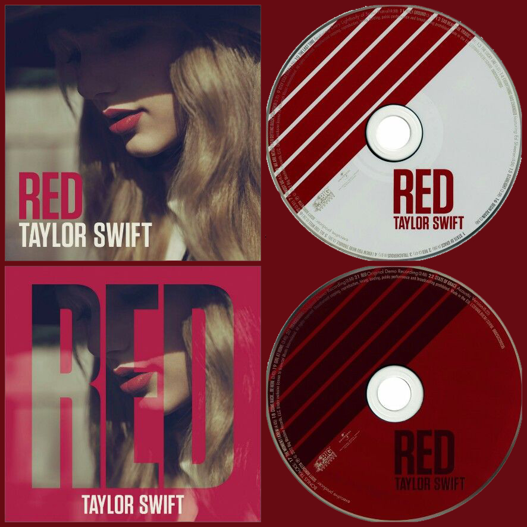

SOBRE O ALBUM RED
Red é o quarto álbum de estúdio da cantora e compositora estadunidense Taylor Swift, lançado pela gravadora Big Machine Records no dia 22 de outubro de 2012.
O lançamento do disco foi anunciado através de um webchat realizado por Swift no dia 13 de agosto do mesmo ano, no qual ela divulgou o título, a capa e o primeiro single oficial do projeto, e ainda respondeu às perguntas dos fãs.
Durante o bate-papo, Swift liberou o primeiro single do álbum, "We Are Never Ever Getting Back Together", que horas mais tarde foi disponibilizado para compra no formato digital através de diversas lojas, como a iTunes Store e o Google Play.
A canção saltou para a primeira posição da Billboard Hot 100 em sua segunda semana com vendas digitais de mais de 623 mil cópias, sendo este o primeiro tema de Swift a atingir o topo da tabela e tornando-a a cantora com o maior número de vendas de um single em uma única semana, ultrapassando os recordes das cantoras Lady Gaga e Ke$ha, e ficando apenas atrás do rapper Flo Rida.
No mês seguinte, a cantora deu início a uma contagem regressiva para o lançamento do álbum, no qual quatro faixas foram lançadas promocionalmente, uma a cada semana, através do iTunes. "Begin Again" foi a primeira delas, e posteriormente se tornou no segundo single oficial do disco. A faixa estreou na 7ª posição da Billboard Hot 100 e teve vendas iniciais de 299 mil cópias
Das outras três faixas – "Red", "I Knew You Were Trouble" e "State of Grace" – duas também figuraram entre as dez primeiras posições nos Estados Unidos, sendo "State of Grace" a única que não ficou entre as dez mais, tendo chegado apenas até a 13ª posição da parada.
Red foi bem recebido pelo público e pela crítica, obtendo índices de venda e de aprovação da crítica bastante positivos.
Em seu primeiro dia de vendas, assumiu a liderança da iTunes Store de diversos países, inclusive a do Brasil.
Vendeu mais de 500 mil unidades nas primeiras 24 horas nos Estados Unidos (sendo cerca de 160 mil apenas na Target Store), e fechou a semana de estreia com vendas de 1.218 milhões, fazendo de Swift a primeira mulher da história a ter dois álbuns vendendo mais de 1 milhão de cópias na semana de estreia desde o início da era da Nielsen Soundscan, em 1991, além de tê-la tornado a artista feminina com o segundo álbum mais vendido da história na semana de estreia nos Estados Unidos.
O álbum também recebeu críticas bastante positivas, registrando uma média de 77 pontos de 100, calculada pelo agregador de resenhas Metacritic.
MOTIVO DO NOME DO ALBUM
De acordo com a Taylor Swift "Eu escolhi o nome 'Red' (vermelho em inglês) pois essa cor simboliza as tumultuosas e loucas aventuras e perdas que o amor traz consigo.
Eu penso que quando você se apaixona, tudo passa tão rápido e fica tão fora de controle que acaba misturando paixão, ciúme, frustração, falta de comunicação e vários outros sentimentos… em análise, todos eles me parecem vermelhos."
DIVULGAÇÂO
Para a divulgação do disco, Swift entrou em parceria com o iTunes e com o programa de televisão Good Morning America.
Foi realizado uma contagem regressiva, no qual uma música inédita seria lançada a cada semana.
A primeira, "Begin Again" teve sua prévia divulgada no Good Morning America em 24 de setembro de 2012, e no dia seguinte foi lançado como download pago no iTunes.
A segunda foi "Red", a faixa-título do álbum, que teve a sua prévia divulgada no mesmo programa em 1º de outubro, e lançado no dia seguinte no iTunes de alguns países como os Estados Unidos, Brasil e Portugal.
A terceira canção "I Knew You Were Trouble" apresenta uma sonoridade mais voltada para a música pop, e teve sua prévia divulgada em 8 de outubro, e seu lançamento como single promocional ocorrendo no dia seguinte.
A última música divulgada promocionalmente foi "State of Grace" que foi previamente divulgada em 15 de outubro, com o seu lançamento no iTunes ocorrendo no dia posterior.
Swift também foi nomeada embaixadora da marca de tênis Keds dos Estados Unidos, onde lançou um tênis vermelho em 22 de outubro, no mesmo dia do lançamento de seu álbum.
Em uma entrevista a cantora respondeu: "Eu sou fã dos modelos Keds há anos.
Me lembro de usá-los quando pequena, ao andar de bicicleta na fazenda.
Quando fiquei mais velha, voltei a usá-los".
A artista assinou um contrato de três anos com a empresa, e o primeiro par de tênis será lançado como uma edição limitada para a divulgação do álbum, que também contará com o logotipo do RED estampado atrás.
Outra forma de difusão feita para o álbum, foi a parceria de Swift com a rede de pizzarias Papa Johns.
A promoção dava aos clientes 25% de desconto em suas pizzas, e ainda fornecia um código especial, no qual o fã teria um desconto na hora de comprar o RED.
Na primeira semana de vendas do álbum, Swift se apresentará durante todos os dias em diversos programas da televisão norte-americana, como no Good Morning America, The Late Show With David Letterman, The View, The Ellen DeGeneres Show e Entertainment Tonight, tudo como parte da divulgação do álbum nos Estados Unidos.
TAYLOR SWIFT NO BRASIL
Em 17 de agosto de 2012, a Universal Music Brasil postou no Facebook: "Marque na sua agenda! 13 de setembro".
Em 20 de agosto do mesmo ano, foi anunciado que Swift viria pela primeira vez ao Brasil, para a divulgação do álbum RED.
Swift visitou apenas o Rio de Janeiro,[48] e participou dos programas de televisão TV Xuxa da Rede Globo, e do Legendários da Rede Record, onde concedeu uma entrevista.
Em 13 de setembro, ela fez uma apresentação fechada somente para convidados que durou quarenta minutos, onde ela cantou: "Sparks Fly", "You Belong with Me", "Mean", "Love Story", "Fifteen", "We Are Never Ever Getting Back Together" e "Long Live", este último com a participação de Paula Fernandes no palco.
RECEPÇÃO DA CRITICA
RED recebeu avaliações bastante positivas da crítica especializada. No Metacritic, que aponta a média de aprovação geral da crítica, ele obteve 77 pontos em 100, baseados em 22 críticas, o que indica "críticas geralmente favoráveis".
Fraser McAlpine do BBC Music respondeu de forma positiva ao álbum, afirmando que "música após música, Taylor aponta o dedo para os irresponsáveis garotos e ergue suas mãos aos céus, perguntando: 'por que eles não me tratam melhor?'", e definindo Swift como "uma compositora de raciocínio rápido" e "uma verdadeira romântica".
Ele ainda declarou que no disco sempre há algo "um pouco desconexo", mas que "está tudo bem [...] pois ela está escrevendo suas atualizações do Facebook para os fãs, e eles amam isso".
A revista norte-americana Billboard também deu uma crítica muito positiva a ele, definindo-o como "o álbum mais interessante dela [Swift] até hoje", e afirmando que ele "coloca a Swift artista no centro das atenções, com grandes e poderosas letras que transcendem suas raízes country rumo a uma mudança de gêneros que atinge níveis invisíveis, mostrada pela primeira vez quando Up! de Shania Twain seguiu a mesma linha, tendo dois discos que iam do country ao pop".
Lewis Corner do portal Digital Spy deu a RED quatro entre cinco estrelas, e afirmou que ele "soa como qualquer coisa, menos como um álbum sobre corações partidos - especialmente quando ela [Swift] está próxima da dominação global".
Melissa Maerz, do portal Entertainment Weekly, também avaliou o disco de forma positiva, dando a ele um (B+) e afirmando que ele mostra Swift "cantando sobre caminhar diretamente pelo trânsito, atravessar a areia movediça e flertar com o tipo de idiota com o qual Kanye West provavelmente brindaria".
Ela concluiu dizendo que "Red provavelmente fala sobre flertar com o perigo".
Randall Roberts do Los Angeles Times deu ao disco três entre quatro estrelas, e afirmou que dentre os quatro álbuns lançados por Swift desde 2006 esse é "o mais surpreendente e consistente de todos – ainda mais porque ele mostra uma artista cujo sucesso subiu definitivamente a cabeça".
Ele também disse que no disco "Swift faz, na maioria das canções, o papel da professora ao invés da aluna [...] oferecendo aulas sobre a importância da versatilidade musical".
Jon Dolan, da revista Rolling Stone, deu três estrelas e meia para RED, e detectou nele influências de alguns artistas e bandas, como Joni Mitchell e U2.
Ele disse: "Seu projeto de auto-descoberta possui uma das melhores histórias do pop.
Quando ela está realmente envolvida nele, suas músicas são como tatuagens".
Em contraponto, Jonathan Keefe, da Slant Magazine, recebeu o álbum de forma mista, afirmando que "RED é o primeiro álbum de Swift no qual suas escolhas para produção das faixas chamam mais atenção que suas composições".
Ele concluiu dizendo que "se no fim das contas o álbum é muito irregular para ser um verdadeiro grande álbum da música pop, seus pontos altos são os melhores trabalhos para a carreira da cantora, que agora soa como a estrela do pop que sempre esteve predestinada a ser".
O portal Sputnikmusic também deu uma crítica mista ao álbum, definindo-o como "pobre" e afirmando que nele "ingenuidade, inocência e romantismo se transformam em simples infantilidade".
Kate Mossman, do jornal britânico The Guardian, recebeu RED de forma positiva, dando a ele quatro entre cinco estrelas ao álbum e declarando que ele "foi supostamente inspirado por uma experiência amorosa dela [de Swift] e pelo ritmo acelerado e loucas aventuras da mesma".
Ela concluiu dizendo: "Como ela teve tempo de se relacionar com tantos amores, bons e maus, só Deus sabe".
Por fim James Lachno, do The Daily Telegraph, foi mais duro em sua crítica e deu ao álbum três estrelas entre cinco, afirmando que "é frustrante quando Swift retorna a seu padrão", e que "várias das canções deste abarrotado álbum revisitam os gentilmente arranhados versos e característicos refrões de seu trabalho anterior".
DESENPENHO COMERCIAL
América
Segundo dados divulgados pela Nielsen Soundscan, Red vendeu exatas 565.545 cópias digitais em todo o planeta através da iTunes Store em sua semana de lançamento, o que fez com que ele registrasse a maior semana de estreia em nível mundial de todos os tempos na loja virtual.
Nos Estados Unidos, foram comercializadas 1.208.290 cópias do disco em sua semana de estreia - a segunda maior semana de vendas da história para uma artista feminina e a maior semana de vendas desde 2002, quando Eminem vendeu 1 milhão 322 mil unidades de The Eminem Show - dando ao álbum a 1ª posição da Billboard 200.
Dentre as mais de 1 milhão de cópias vendidas, cerca de 465 mil foram comercializadas através do iTunes, outras 396 mil pela Target e outras 8 mil pela Papa Johns.
Na semana seguinte, o álbum se manteve no topo da lista dos mais vendidos no país com vendas de 344 mil unidades, apontando uma queda de 72% em relação a semana anterior, porém com vendas totais de 1 milhão 553 mil cópias, que foram suficientes para torná-lo o segundo álbum mais vendido do ano em território estadunidense, jogando Up All Night, da boyband inglesa One Direction, para a terceira posição.
Nas duas semanas seguintes foram vendidas 196 mil e 145 mil unidades do disco, respectivamente.
Em sua quinta semana de vendas, o álbum manteve-se na 2ª posição da parada e vendeu 185 mil cópias (40 mil a mais que na semana anterior), ultrapassando a marca de 2 milhões de cópias vendidas em território americano.
Na sexta semana, o disco vendeu 137 mil unidades e ficou com o 2º lugar da Billboard 200 pela terceira semana consecutiva.
Na semana seguinte (na qual Swift completou 23 anos), Red retomou a liderança da parada com vendas com vendas de 167 mil cópias, onde permaneceu em sua sétima semana, graças as vendas de 208 mil unidades, que impediram o álbum Unorthodox Jukebox, do também americano Bruno Mars, de atingir a liderança do ranking em sua semana de lançamento.
No início do mês de dezembro de 2012, Red foi certificado com um disco triplo de platina pela Recording Industry Association of America (RIAA) por vendas estimadas em 3 milhões de cópias no país.
No Canadá, Red também foi o líder de vendas em sua semana de lançamento, atingindo vendas de 92.5 mil cópias, o que lhe deu o status de melhor estreante dos últimos quatro anos no país.
Algumas semanas depois, o álbum recebeu um disco triplo de platina no país, emitido pela Music Canada e que indica vendas acima de 240 mil unidades.
Na Argentina, chegou a 16ª colocação da lista dos mais vendidos da Cámara Argentina de Productores de Fonogramas y Videogramas (CAPIF).
No México, chegou até a 4ª posição da lista da Asociación Mexicana de Productores de Fonogramas y Videogramas (AMPROFON).
No Brasil, recebeu um disco de ouro por vendas acima de 20 mil cópias, emitido pela Associação Brasileira dos Produtores de Discos (ABPD).
Não oficialmente, Red já recebeu um disco de platina no país, indicando vendas que já ultrapassaram a marca de 40 mil cópias.
Europa e África
No Reino Unido, Swift atingiu pela primeira vez em sua carreira o 1º lugar da UK Albums Chart, com vendas de 61.7 mil cópias na primeira semana.
Esse fato se repetiu na Escócia e na Irlanda, onde Red atingiu a liderança do ranking dos mais vendidos.
Além de ter atingido o topo da IRMA Albums Chart, Red ainda vendeu cópias suficientes em 2012 para ser certificado com um disco de platina, emitido pela Irish Recorded Music Association graças ao total de mais de 15 mil cópias vendidas.
Na Noruega, ele chegou a 2ª posição da VG-lista.
Na Áustria, na Itália e na Dinamarca atingiu a 3ª posição.
Na Espanha chegou até a 4ª posição.
Na Alemanha, ele chegou a 5ª posição na parada da Media Control.
Na Suécia e em Portugal, Red foi o 8º disco mais vendido em sua semana de lançamento.
Na Suíça, assumiu a 9ª posição.
Na França e na República Checa chegou a 26ª e a 33ª colocações, respectivamente.
Na Croácia, chegou até a 25ª posição da parada geral e a 7ª posição da parada internacional.
Nos Países Baixos (ou Holanda), ele chegou a 7ª colocação.
Na Bélgica, dividida nas regiões Flandres e Valônia, o álbum atingiu a 2ª e a 25ª posições, respectivamente.
Nessas três últimas regiões (Bélgica e Holanda), Red estreou sem a ajuda das vendas físicas, ou seja, apenas com as vendas na iTunes Store. Na Finlândia atingiu a 49ª posição.
Na África do Sul, chegou até a 4ª colocação da parada da Mediaguide.
Ásia e Oceania
No Japão, o disco chegou a 3ª posição na lista dos mais vendidos, com vendas de 32 mil cópias na primeira semana.
Na semana seguinte, o álbum se manteve na 3ª posição, com vendas de 16.8 mil cópias.
Na terceira semana, devido ao grande número de lançamentos da semana, o disco deixou o top 10 e ficou com a 11ª posição da parada da Oricon, registrando vendas de 11.1 mil cópias.
Na quarta semana, adicionais 8.9 mil cópias do disco foram vendidas no Japão, e ele caiu para a 17ª posição da parada.
Já na semana seguinte, o disco subiu duas posições tornando-se o 15º álbum mais vendido, com vendas totais de 12.8 mil unidades.
Na sexta semana de vendas, Red vendeu 14.4 mil unidades em território japonês, subindo para a 10ª posição na lista do mais vendidos.
Na semana seguinte, o disco caiu 7 posições no ranking e vendeu 9.6 mil unidades, chegando a um total de 106 mil cópias comercializadas, número suficiente para assegurar um disco de ouro no país.
Em sua oitava semana no chart, Red vendeu mais 9.4 mil unidades.
Na semana seguinte, atingiu a 20ª posição do ranking, vendendo 8.2 mil unidades.
Na décima e na décima-primeira semana de vendas, atingiu o 16º e o 13º lugares da tabela, com vendas de 8.6 mil e 8.4 mil unidades, respectivamente, e alcançando um total de 140.8 mil cópias comercializadas.
Na lista de discos certificados em novembro de 2012 emitida pela Recording Industry Association of Japan (RIAJ), Red recebeu um disco de ouro por vendas superiores a 100 mil cópias em território japonês.
Em Taiwan, o álbum estreou na 3ª posição da classificação geral, e ficou com o 1º lugar nas classificações internacional e western.
Na Coreia do Sul, o álbum chegou a 12ª posição no ranking geral e ao 1º lugar no ranking internacional.
Na Austrália e na Nova Zelândia o álbum também assumiu a 1ª posição na lista dos campeões de vendas da semana, tendo recebido discos duplos de platina em ambos os países, indicando vendas acima de 140 mil e de 30 mil cópias, respectivamente.
COMPOSIÇÃO
A primeira faixa do disco é "State of Grace", que possui 4 minutos e 55 de duração e foi gravada em andamento moderado, com um metrônomo de 132 batidas por minuto.
Sua melodia é composta através do uso da guitarra elétrica e do piano, em uma estrutura semelhante a dos trabalhos da banda de rock irlandesa U2.
Sua letra fala sobre o amor como um "estado de graça", que surpreende a intérprete ao chegar sem avisar e que a transforma.
Lançada como single promocional uma semana antes do início das vendas do álbum, foi um dos temas do LP mais elogiados pela crítica, sendo amplamente comparada aos trabalhos do U2 e de outros grupos de rock, como o Switchfoot.
"State of Grace" é seguida por "Red", faixa homônima do disco que possui uma duração de 3 minutos e 43 segundos e foi gravada sobre um andamento moderado, com 126 bpm.
Com uma melodia que mescla elementos da música country e do rock, fala sobre um amor que possui diversas fases e colorações, sendo a mais intensa delas a cor vermelha.
Também obteve uma resposta positiva da crítica contemporânea, que reprovou apenas o uso do autotune no refrão.
DISCO DO ALBUM RED
O Album RED conta com duas versões sendo RED como versão base e a versão Deluxe com mais faixas.
Na versão digital, as faixas estão organizadas em único disco, ou seja, as faixas do Disco 2 fazem parte do Disco 1, o que dá um total de 22 faixas em um único disco.
